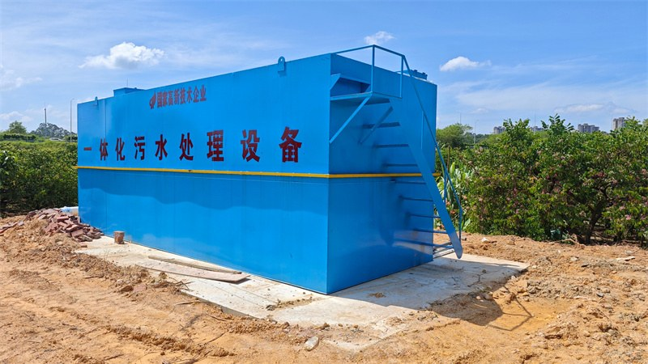
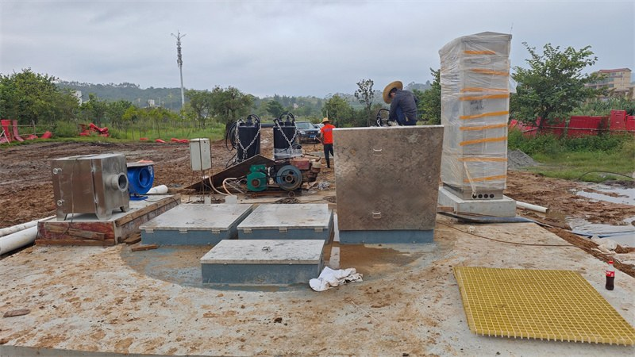
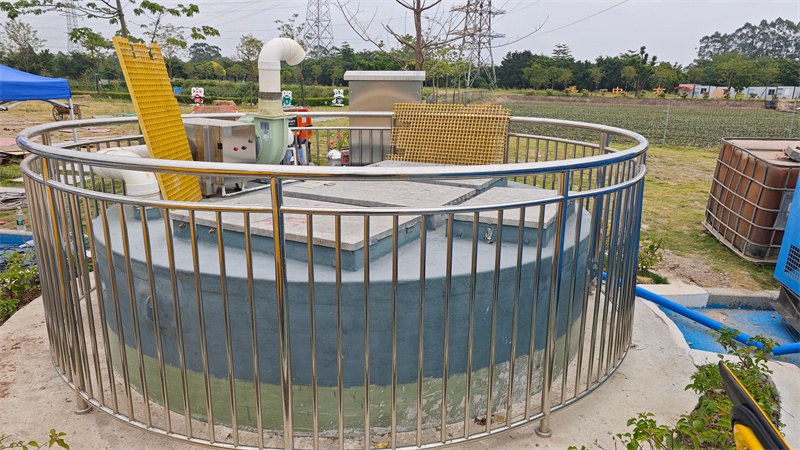

某市政污水处理厂三期 ↗
6 万 m³/d · 项目规模由委托方提供。查阅问题、方案与结果资料及项目咨询入口。
6 万 m³/d · 项目规模由委托方提供。查阅问题、方案与结果资料及项目咨询入口。
屠宰废水 4000 m³/d · 项目规模由委托方提供。查阅问题、方案与结果资料及项目咨询入口。
〔待确认：农村污水、医院、房建及泵站项目的公开授权与资料〕
以下图片按设备类别展示。具体项目名称、处理规模、合同范围及验收资料待补充确认。




以下图片按设备类别展示。具体项目名称、处理规模、合同范围及验收资料待补充确认。




留下项目类型、规模和联系方式，便于进一步核对技术需求。
本页为效果预览，表单暂未开放。